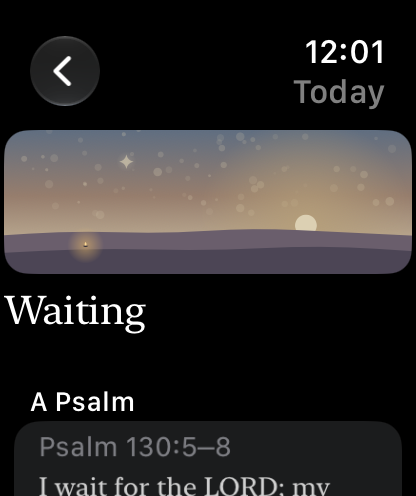
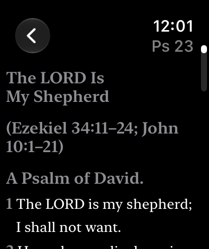
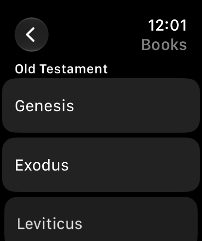

The Bible on Apple Watch
Lamp & Line keeps the complete Berean Standard Bible on the Watch itself, not on a phone it has to reach. Leave your iPhone at home, or switch it off, and your wrist still has Scripture.
Free. One optional purchase, never a subscription.
What is on the Watch
The Watch app carries its own copy of the whole Bible, all 66 books in 6.9 MB, and its own copy of the daily readings. It works out what day it is by itself, the same way the iPhone does, so the two agree without talking to each other and nothing waits for a signal.
That copy is installed whether or not you buy anything. Unlocking the whole Bible later opens a door; it is not a download that could fail on a plane.
The app has three places: Today, Read, and your Bookmarks.



Today, Psalm 23, and the books, on the wrist.
Free on the wrist
- Today. The day’s Psalm, a short reading, and a prayer: the same card your iPhone shows, under the same painted landscape. Mark the day done on the Watch, and your iPhone hears about it the next time the two are in touch.
- Your bookmarks. The verses you keep on iPhone are listed on the Watch.
- A complication. The lamp, in the round slot on your watch face, opens Today in one tap.
None of it needs an account, and nothing you read is sent anywhere.
With Lamp & Line Full
- The whole Bible. Read opens all 66 books and every chapter, offline. Poetry keeps its lines, the section headings are there, and the next chapter is a tap away at the foot of the page. A bookmark opens at its verse.
- Every complication. The rectangular one shows the day’s reference with a line of its text, the inline one puts the reference along the top of the face, and the corner one holds the lamp.
Full is one purchase, never a subscription, and it is bought on the iPhone: the Watch never asks you for money. If you already own it, open Lamp & Line on your iPhone once and the Watch learns what is unlocked.
What stays on the iPhone
The Watch is for reading. Search, notes, highlights, reading plans, threads between passages and word study are on iPhone and iPad, where there is room for them.
Lamp & Line needs watchOS 11 or later on the Watch, and iOS 18 or later on the iPhone.
Put the Bible on your wrist
One App Store download covers iPhone, iPad and Apple Watch. More about the Berean Standard Bible in Lamp & Line.